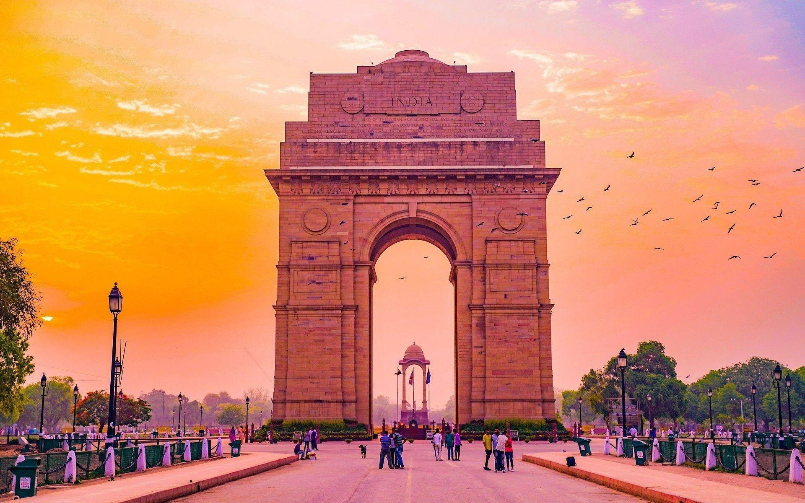
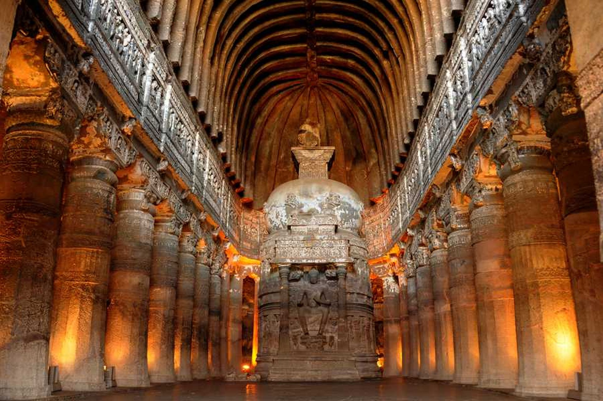
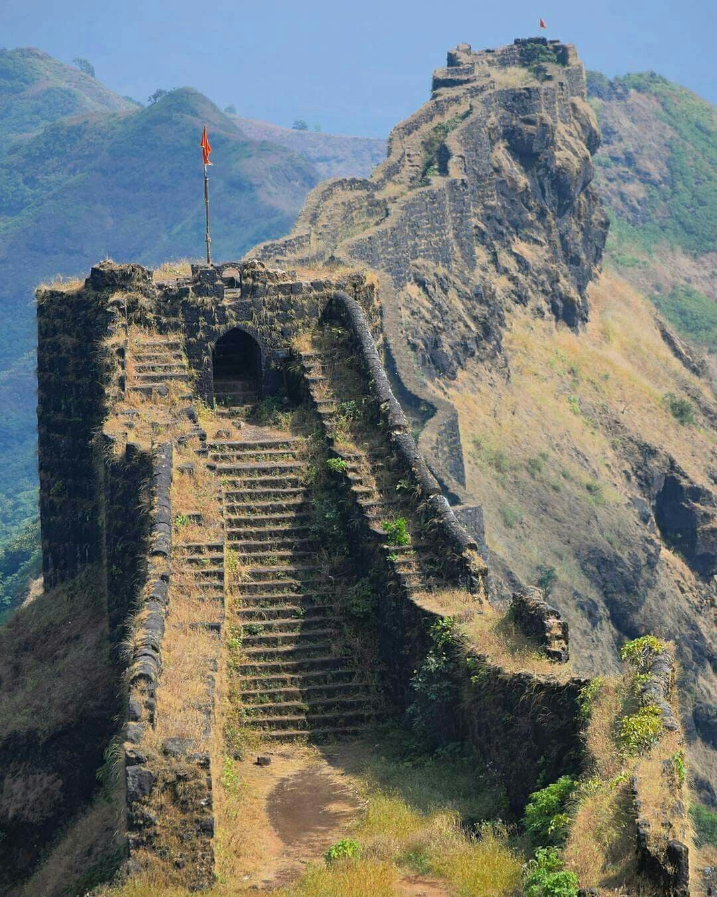
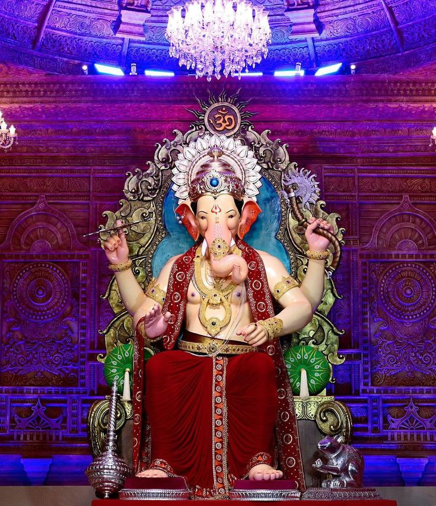

The Land of Warriors, Culture & Grand Festivals

Located in Mumbai, the Gateway of India is one of Maharashtra’s most iconic monuments. Built during the British era in 1924, it stands proudly on the Arabian Sea and represents historical and architectural beauty.
It attracts thousands of visitors daily and serves as a symbol of Mumbai’s grand colonial history and vibrant coastal culture.

The Ajanta Caves are UNESCO World Heritage Sites famous for ancient Buddhist paintings and rock-cut sculptures dating back to the 2nd century BCE. They reflect India’s rich artistic history.
These caves beautifully showcase spiritual themes, detailed carvings, and extraordinary craftsmanship that continues to inspire historians and artists worldwide.

Raigad Fort was the capital of Chhatrapati Shivaji Maharaj. It symbolizes Maratha bravery, leadership, and strategic brilliance. The fort stands high in the Sahyadri mountains.
The fort remains an important cultural landmark, reminding people of Maharashtra’s proud warrior legacy and inspiring generations with its powerful history.

Ganesh Chaturthi is one of the grandest festivals celebrated in Maharashtra. Devotees welcome Lord Ganesha idols into homes and public pandals with music, dance, decorations, and prayers.
The festival lasts for 10 days and ends with a vibrant immersion procession (Visarjan). Cities like Mumbai celebrate it on a massive scale, bringing people together in joy and devotion.
Maharashtra is known for Lavani dance, Koli traditions, Marathi theatre (Tamasha), and vibrant festivals. The state beautifully blends historical heritage with modern city life.
From traditional attire like Nauvari sarees to energetic dhol performances during festivals, Maharashtra’s culture reflects unity, strength, and artistic richness.